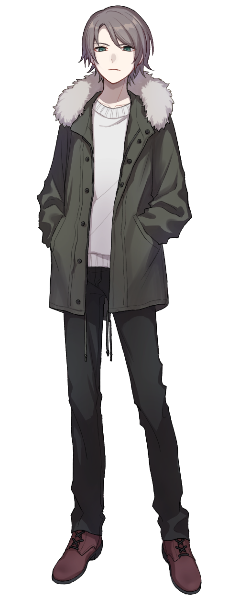

伝わりにくい感情
感情が乏しいのではなく、表情があまり変わらないだけ。嬉しさや楽しさを感じても、顔には出にくい。
湊人（明人の兄）／行方不明の青年
みはら みなと Mihara Minato
言葉や表情には出にくい、静かな優しさを持つ青年。

湊人（明人の兄）は、主人公・美原明人にとって唯一頼れる家族だった。
一見すると物静かで感情の読みにくい青年だが、実際は優しく、感情も豊か。困っている人を見ると放っておけず、誰に対しても自然に手を差し伸べる。
灰色がかった髪と緑色の瞳が特徴。ファーのついた暗色系のコートを着ている。
ある行方不明者の捜索依頼を受けた後、消息を絶ってしまう。
その失踪の真相は、物語の核心に深く関わっている。
感情が乏しいのではなく、表情があまり変わらないだけ。嬉しさや楽しさを感じても、顔には出にくい。
ときどき真顔で冗談を言うが、周囲に伝わらないこともある。
相手が困っているのを見たら自然と手を差し伸べる。人を助けることに、特別な理由を求めない。
両親がいなくなってからも、湊人は明人を支え続けてきた。突然の失踪以来、明人はわずかな手がかりを追い続けている。